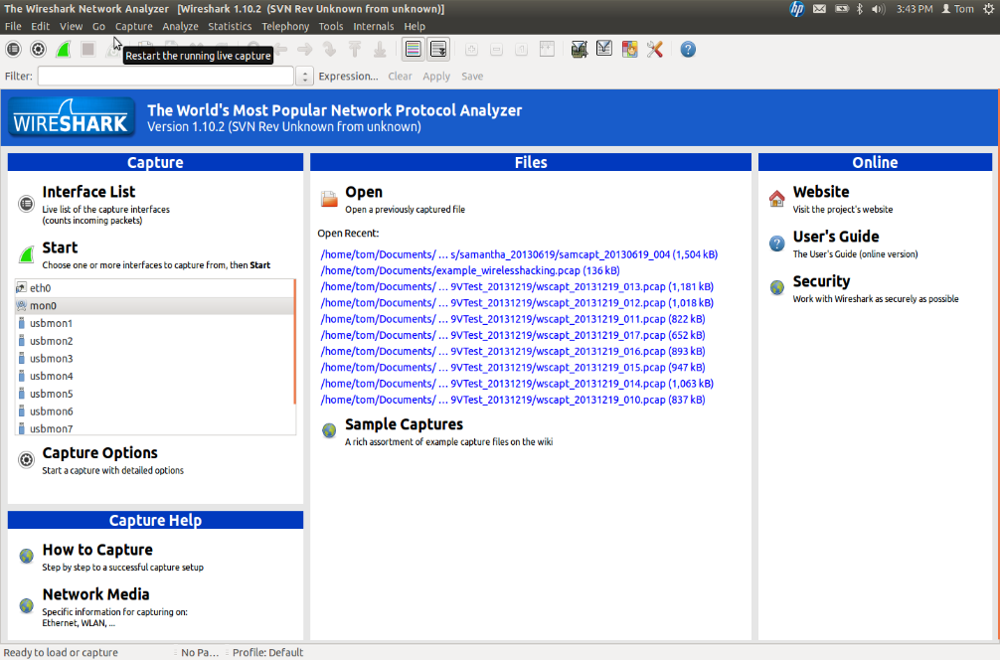
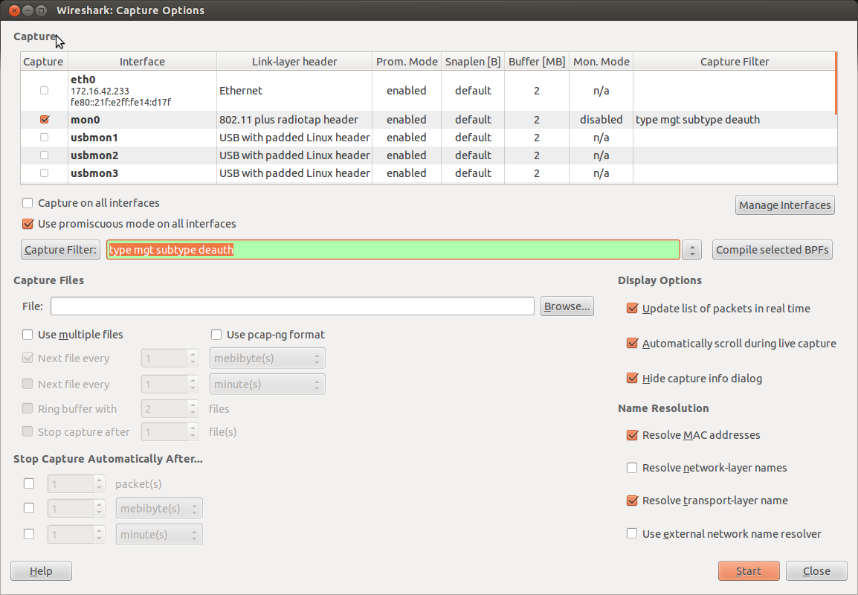
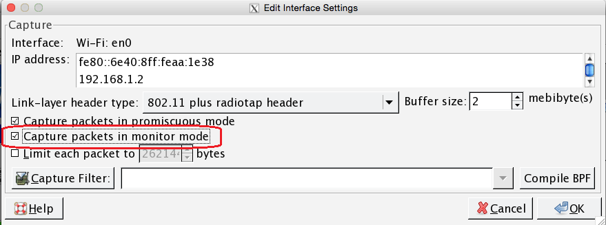
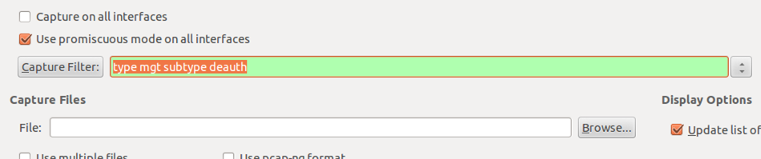
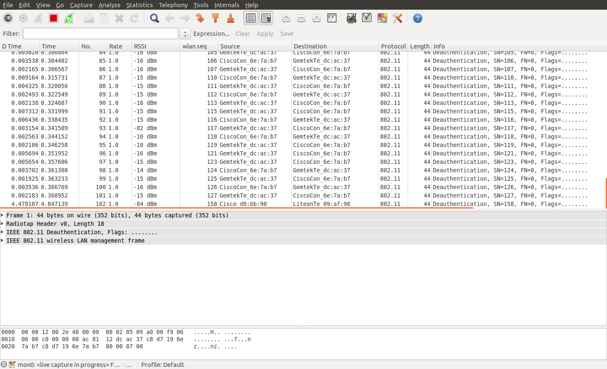
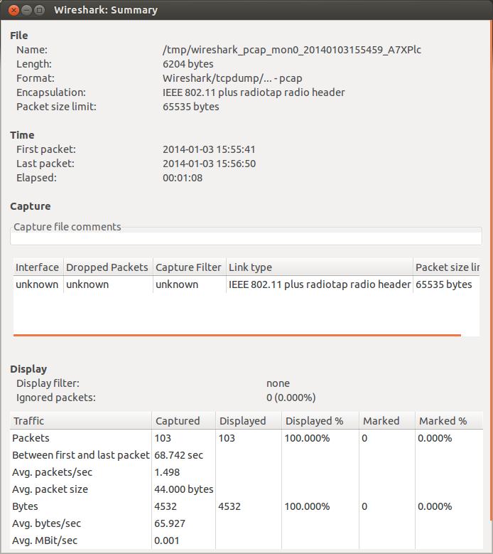
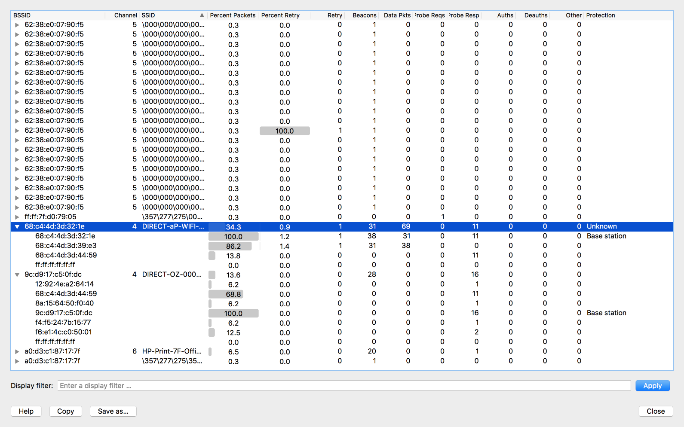

Using Wireshark for Packet Capture
Wireshark is a free, open-source network protocol analyzer. This page walks through a couple of narrow, practical examples of using Wireshark to investigate specific wireless issues at a FIRST Tech Challenge event. It is not a general Wireshark tutorial — detailed Wireshark usage is beyond the scope of this guide. For full documentation, visit the Wireshark website.
This page assumes you’re already familiar with the general-purpose monitoring tools covered in Monitoring the Wireless Environment, and are looking for a deeper packet-level diagnostic technique.
Creating a Capture Filter for DEAUTH Packets
This section demonstrates how to create a Wireshark capture filter that captures 802.11 deauthentication (DEAUTH) packets on a wireless channel. It is possible for a person to spoof (masquerade as) the MAC address of a device to disrupt that device’s wireless communication. If you have access to a machine running Wireshark, you can use it to look for DEAUTH packets in your vicinity.
Download and install the most current release of Wireshark from the Wireshark website, following the installation instructions there.
To examine wireless data with Wireshark, you need a device whose wireless adapter supports monitor mode. A Mac running a recent version of macOS can generally use its built-in wireless adapter in monitor mode. For Linux devices, consult the Wireshark and Linux documentation to determine whether your computer’s wireless adapter supports monitor mode.
Note
Some configurations require Wireshark to be run as a super user. If your setup requires super user status, it is possible to modify your Wireshark installation’s permissions so that it no longer needs to run as a super user. Consult the official Wireshark documentation for details.
Once Wireshark is installed and you have verified that your wireless adapter can run in monitor mode, launch Wireshark. The following screenshot shows the Wireshark user interface (version 1.10.2, Linux):

Wireshark user interface.
Click the Capture -> Options menu item (or the button that looks like a small gear, second from the left on the button bar) to open the capture options window:

Make sure you select the adapter that is running in monitor mode.
Make sure the wireless adapter running in monitor mode is selected as the
capture interface. In the screenshot above, mon0 is the device running in
monitor mode. Mac users can double-click the wireless adapter in the list and
check Capture packets in monitor mode to place the selected adapter into
monitor mode:

Mac users can select the Capture packets in monitor mode option.
In the Wireshark Capture Options window, there is a text box next to a
button labeled Capture Filter. Enter your capture filter in this text
box. The capture filter limits the capture session to only packets matching
the filter criteria. In this case, specify the filter as
type mgt subtype deauth (do not type the quotation marks, just the text
itself). If the filter syntax is correct, the text box’s background turns
green:

Specify the capture filter type mgt subtype deauth in the text box.
When you are ready to start the capture, click the Start button. If the
capture filter is applied properly, the Wireshark packet list will display
only packets of type mgt and subtype deauth. The following image
shows DEAUTH packets captured by Wireshark:

DEAUTH packets captured by Wireshark.
You can run this capture, with the filter applied, during a FIRST Tech Challenge event, and it will display only DEAUTH packets. It is normal for some DEAUTH packets to occur, but seeing several DEAUTH packets in a row during a specific window of time might indicate an intentional DEAUTH attack.
Note
DEAUTH packets occur normally, so a Wireshark capture might contain several benign DEAUTH packets. If you suspect a DEAUTH attack occurred at an event, note the approximate time of the attack and the team numbers of the affected robots. You can then check whether Wireshark captured any DEAUTH packets around that time, and cross-reference the source address of those packets against the addresses of the robots that lost wireless connectivity. During a DEAUTH attack, an attacker spoofs the MAC address of the target Robot Controller, pretends to be that Robot Controller, and sends DEAUTH packets to devices (such as the Driver Station) connected to its wireless network.
To stop the capture, click the red square icon. Use File -> Save to save the captured data to disk.
You can also use the Statistics -> Summary menu item to get basic statistics about the capture data. Remember that if you applied the DEAUTH capture filter, only DEAUTH packets were captured. The following image shows the Statistics -> Summary window; in this example, 103 DEAUTH packets were captured during the session:

103 packets were captured in this example.
Viewing WLAN Traffic Statistics
Wireshark can also show Wi-Fi statistics for your captured data. If you disable any existing capture filters (to make sure you capture all available data) and run Wireshark in monitor mode, you can capture and quickly review the data to get some basic information about your wireless environment. With wireless data captured in monitor mode, select Wireless -> WLAN Traffic from Wireshark’s menu to view statistics about the captured data:

The WLAN Traffic screen provides useful statistics about the captured data.
In the example shown above, the captured data is sorted by SSID. Looking
closely, the network called DIRECT-aP-WIFI-A-RC has a BSSID (MAC
address) of 68:c4:4d:3d:32:1e, which is also the MAC address of the
“Base station” (the Robot Controller).
That network accounts for 34.3% of the captured data. Expanding the entry for this network lets you review statistics for each device associated with it.
The WLAN Traffic view is useful for troubleshooting your wireless network. If your capture shows that a device, whether a Robot Controller or a Driver Station, has a high number of retries, you can check whether something is degrading that device’s radio performance. You can also check whether other devices on the same channel show similar issues.
You can also use the WLAN Traffic view to determine which device is putting out the most data on a channel — useful when trying to identify sources of heavy Wi-Fi traffic on a wireless channel.